Glendenning Family Memories
LIFE AT LITTLE BRANCH
I believe that Elmer and Jane Glendenning returned to New Brunswick in 1919 although I do not know the exact date nor even if they travelled together. Named and dated photos in Mum’s collection, show that the family was in Mussel Shoals, Alabama in the earlier part of 1919. John was born on December 14, 1919 in Black River; the younger children would have been there as well. So the move must have occurred earlier that year. One might assume that the family moved at latest during the summer so that the children, at least Walter and Grace, could enrol in the Little Branch School by September. They already had a house waiting so temporary accommodation following the move would not have been a major problem. Discussion with siblings suggest that their return was in May, 1919.
Dad had purchased the property at Little Branch, where Norman Glendenning now lives, from Alexander and Ethyl MacDonald. Sometime in 1914, the family took up residence in Black River for a couple of years before returning to the USA again in late 1916. Who lived in their property during their absence, if anyone, we do not know.
Their property was known as the Jessie MacDonald property. "Miss Jessie", who was a schoolteacher, died in 1912. This property was directly across the road from where mother had lived as a child and where her father and mother still lived. The western property line, starting at the Little Branch School, forms the back property line for many of the properties along Black River. The rear of the property was known as Jessie's Corner - probably at the rear of either the Godfrey or Gibson property. While I have not completed my search or county records, I believe that the property passed from John MacDonald to Jessie and on her death from Jessie to her nephew, Alexander MacDonald who sold it to my father.
The original house, owned by Miss Jessie, was a traditional “story and a half” with a gable roof and built end on to the road. Dad added an ell, likely in the early 1920’s; by 1920, they had five children and the house must have been very crowded. Most if not all of the lumber for the addition was cut on the property, including a hardwood for the floor and pine for pantry cabinets. The space added to the main floor included a large kitchen, pantry, back entry and another stairway to the second floor. A basement was included under the entire house. Two bedrooms and a large closet/storage room were added on the second floor; As I recall, that closet was considered a likely location for a modern bathroom. He also added a closed-in veranda along the entire front of the house.
The barn was also enlarged by doubling its length and adding a shed at the back and included stalls for five horses, a new set of large doors to a new “barn floor”, haymow, and some pigpens. At some point a machinery shed and workshop was added to the west end of the barn, and a henhouse and grain shed were built as separate buildings. And of course, one must not forget the two-hole outhouse.
During his lifetime, Dad added purchased five pieces of property in the community; he now had a place for each of his sons.
Dad had purchased the property at Little Branch, where Norman Glendenning now lives, from Alexander and Ethyl MacDonald on July 21, 1914 for the sum of $800.00.
On June 11, 1924, he purchased 18 acres of land from James Finno for the sum of $900.00.
On July 27, 1929 he purchased the "Mac" place from Jane MacDougall. Venetia thought that the property, up to Hexham corner, was owned by Jane and Anne MacDougall. Later Bob and Bioney MacDougall moved to the house at Hexham from their place down on MacDougall’s Point beyond Harper's.
He purchased about 70 acres of land, with 12 acres cleared, from Dan MacLean. Dan, who was a Great-Uncle to Everard and Harry MacLean who are residents of Black River, lived on the property with his sister Lizzie. When Dan died, Lizzie moved to the "poor house". Agnes (Gibson) Glendenning remembers when Dan died - likely in the early 1920's. Walter built a house there in 1938 and 1939 and he and Agnes lived there until 1958.
In 1931 Dad purchased a property from Bob Mac Lean, Dan's brother. The arrangement allowed Bob to live in the house until he died. According to the agreement, Bob was able to keep some barbed wire fencing (This was before herd-law and fencing was needed to protect ones crops from roving cows.); he could also harvest a field of oats. The deed also provided a right of way right of way to the Dan MacLean property. Records show also that Mrs Moodie, Bob’s sister?, held a mortgage on the property. As I recall, Harry MacLean discovered Bob dead in the house in the early 1940's. John and Mary built a house on the Bob MacLean property. The old MacLean house was fixed up and is still used for storage
On November 29, 1926, Dad bought property from James A. and Kathryn Watling. For some reason, the transaction was not registered until September 17, 1929. This property, I believe, was the narrow strip of woods between Uncle Jim and Ian MacNaughton.
On September 9, 1936, Dad purchased a 100 acre woodlot, Lot 7B< from the Crown to provide a woodlot for the MacLean property.
Mixed Farm
The farm was a mixed farm, that is it included such animals as cows, pigs, hens, geese, horses, turkeys; crops included a farm garden, oats, barley, wheat, buckwheat, and hay. As a result, income, or other good through trade, was obtained from eggs, chickens,, beef, pork, the sale of weaners (Piglets four to six weeks old), geese, turkeys, ducks, bales of hay, bags of grain, cream, potatoes, furnace wood, and butter, etc. In addition, it ensured that the family had meat and potatoes for their own use.
Sheep
We always kept a few sheep, perhaps a dozen or so – nor am I sure of the breed although I know they were white. The sheep had their own shed at the top of the hill where we coasted. It was easy to climb onto the roof of the sheep shed and jump off into the snow bank, which curled around it.
Each spring there were new lambs, usually twins but sometimes only one; they always seemed sickly and some had to be nursed with a bottle. Sometimes they were brought into the house for a few days, Some died. But they were cute. In early summer the sheep had to be sheared. Sheep shears were hand operated, very sharp and were hinged at one end not hinged in the middle like a pair of scissors. I never sheared sheep but I helped Norman on at least one occasion.
One put a few boards on top of sawhorses. Sheep were caught and their front and hind legs were tied together. Then they were put on the table and sheared. Norm was pretty good at it although occasionally nicked the skin and drew blood. Sometimes the sheep had ticks and had to be dusted or sprayed. They sure looked funny with all the wool removed. Shearing sheep was a dirty, smelly job partly because the wool was so oily.
I remember Norm bringing home half a dozen sheep in the old Model A. He had removed the back seat and turned up the seat on the passenger side.
Also in the spring of the year, we docked the tails of the lambs. Docking meant cutting off their tails to leave only a stub. This was done with one chop with a sharp axe. We had small cloth squares, perhaps a 4-inch square, and a bit of grease was put on the cloth and over the end of the stump. This was used to keep the wound clean.
Cars
Dad owned purchased a Model T Ford; it had a soft top with curtains on the side. Lillian thought it was purchased from McLennan’s Garage in Chatham. MacLennan's garage was located on the corner of the Park probably the site of MacCarthy's (and Flett's) garage in later years. Grace was learning to drive at the time and the salesman took Grace for a drive in the car. Lillian remembered travelling with Dad in the Model T to Moncton to bring Grace and Gladys MacNaughton back from Business College. Lil Cormier, a cousin, went with them. On the way home, I think at Gilbert’s Corner, Dad upset the car. Grace broke her wrist and Dad had some cuts and bruises. Lillian also recalled that, on the same trip, they stopped in Rexton on the way home and had supper with a friend. On the way home after supper, they encountered a car load of men who tried to run Dad off the road; Lillian thought that the med had been drinking and may have been rumrunners. Dad pulled into a store and phoned the RCMP in Newcastle. Lillian drove back as far as John W MacNaughton’s in the police car. She also recalls that there was a dance that night in the Little Branch School. Venetia was at that dance.
In the early 1930s, Dad bought a two-door Model A sedan. Both Lillian and Walter remembered it being purchased from the Babineau sisters, the Babineau family operated the cinema in Chatham, and was purchased on the day Annie MacDougall died. Walter remembered working with Dad cutting wood up Bay du Vin River to earn money to buy one of the cars. Shown above are the 1928 registrations for the Model T Ford and in 1938 for the Model A. Ford Thanks to Lillian (Glendenning) Murray for access to the original documents.

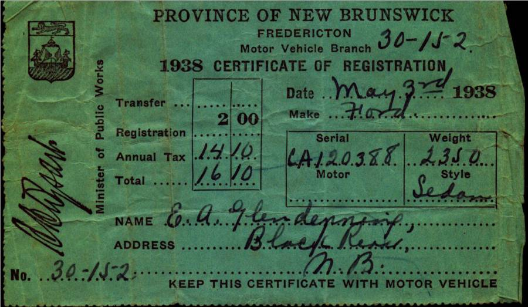
The gas tank for the Model T, was just in front of the windshield and gas flowed by gravity to the engine. On very steep hills, the Tabusintac for example, the car had to be turned around and driven backward up the hill. . The Model A sat in the old wagon shed, presumably because of the recession. Walter said that Dad allowed $2.00 worth of gas each week but I do not recall for what year. Gas pumps of the day were pumped by hand to fill a chamber at the top of the pump. The gas then flowed by gravity through the hose to the gas tank on a car. I don’t Dad was a very good driver. Venetia recalled that Aunt Venetia came to New Brunswick, perhaps for Grace’s wedding. Dad took Aunt Venetia for a drive to show her around. (I think that I went along for the drive) On her return, Aunt Venetia said she now understood why Mum did not want to travel in the car when Dad was driving.
Dad would have earned good money when he worked in construction. I vaguely recall seeing a pay envelope one time that showed he earned 90 cents an hour but I am not real sure of this. Apparently he left his money in a bank in the USA, perhaps Portland, and lost some money in the crash of 1929.
Patricia Hubbard wrote the history of the Northumberland cooperative. In it, she records some comments by Charles Butler about members of the Northumberland Agricultural Council. About Dad, Butler said " a big man with tremendous capacity for hard work".
Dad had a team of oxen which he used around the farm. Lillian remembers using them to haul sap from back on the "ridge".
Dad was active in the community including the building of St. Paul's Presbyterian Church (on June 14, 1926 was elected to the first Board of Managers (Trustees), was a prime mover in the construction of a community hall. The first hall was opened in 1931 and burned to the ground in 1932. A second hall was built in 1933. He was active in the Orange Lodge, Oddfellows, and Masons.
In addition to farming, he and his brother-in-law, John W. MacNaughton operated a pulp business. They operated a "rosser", a machine for peeling pulp in Middle Black River, across from the Cameron School, and operated lumber camps in St. Margaret's and the Black River area. (Across the road from the Cameron school) He continued to be active in construction and built the bridge at John Godfrey's and John Dick's. His last job away from home was the construction of Tinker Dam near Woodstock, NB
Elmer Glendenning was known as a hard worker. He built and repaired his own harness, re-soled the children’s shoes, and made axe handles. Even when he was not able to work, Brydone Weeks told that Dad had himself taken to the field in a wheelbarrow where he sharpened the scythes while the men were cutting marsh hay. Dad suffered for a number of years with pernicious anaemia (or was it leukemia ?). Walter remembers the wagon rack breaking one evening when coming from the woods with a load of wood. Later he and Dad returned to the woods, unloaded the wood, cut poles, repaired the wagon rack, and returned home so that the wagon load of wood was ready to be taken to Loggieville the next day. Part of the repair work was carried out by the light of a lantern. Lillian remembers Dad up on the roof shingling at daybreak.
Ken recalls that Dad had cleared some land in the back field, behind where Eric now lives. He had requested a fire permit to burn brush. Expecting it in the mail, he decided to go ahead and burn. The permit did not arrive; the fire jumped the ditch and got into the woods. Dad and others carried barrels of water on a truck wagon from the river to put out the fire. John Fowlie, who was the local firewarden called the RCMP because Dad was burning illegally. Two RCMP officers arrived; one was Bedford Peters a first cousin of Dad’s and the other was Aubrey Falls. On the way in to Black River, Bedford had stopped and picked up the required fire permit. Lillian arrived home from the USA in the midst of all the commotion.
Jean, Mrs Norman, Glendenning remembers her Uncle Allie MacDonald telling about working in the woods with Dad. Apparently Dad lumbered Willard’s (Jean father) place the year he bought it. Allie was on the other end of a crosscut saw with Dad. Dad said, ”I don’t mind giving you a ride, little man, but please don’t drag your feet.”

A sewing class at the Little Branch School, undated and believed to be:
Back Row: Kate Jardine, Kate (Mills) Watling, Ruth (Ullock) Watling, Jane (Allen) Cameron, Alice (MacLean) Watling
Front Row: Irene (MacNaughton) Godfrey, Minnie (Williston) Fowlie, Miss Barnett, Jessie (MacLean) Fowlie, Mrs. Herb Fowlie, Kate (Watling) MacLean
Young girl in centre is unknown
Agricultural Society
Dad was a founding member of an Agricultural Society (#103) and was its Secretary Treasurer for fourteen years. An Agricultural Society, and there were many throughout the Province, was like a Co-op. Farmers banded together and bought seeds, lime and fertilizer, etc. in bulk and sold it to themselves. Seems to me that they also handled some agricultural pesticides or herbicides. Farmers were canvassed each winter; their needs aggregated and then orders were placed. Lime and fertilizer was ordered by the ton (by the boxcar) either loose or bagged. It came to the station in Loggieville. When it arrived, John, Walter, Ken and Norm would go to Loggieville and shovel the lime or fertilizer from the boxcar to the wagons for farmers who had bought it. Later lime and fertilizer could be purchased either bagged or loose.
Dad kept the Agricultural shed. The shed was well-built with a pitch roof, probably 10 to 12 ft wide and 20 to 24 feet long but that is only a guess. It sat by the west side of the lane across from our back door. I remember seeing the bags of timothy, alsike clover, red clover, alfalfa, etc. As Secretary-Treasurer, he kept the books. The only
auditor I recall was Johnnie McKnight. And I remember him coming to the house and going over the books. When he finished, he inscribed the following: “Audited and found correct, John C. McKnight”.
Recently Arthur Mills, formerly from Hardwicke, sent me a statement of account sent to his father, Jasper Mills, by my father, Elmer Glendenning, for 1930 with the Black River Agricultural Society No. 103 Dr. and Co-0perative Association. (I am not sure what the Dr. stands for.)”The statement dated Sept. 16th 1930 had the following entries:
Jan 1 Credit in Book $ 1.20
Fee for 1930 $ 1.00
Mar 20 ½ ton fertilizer $14.45
By cash $14.45
May I ton grain fertilizer $18.15
By cash $18.00
June 30 # timothy seed $ 3.60
9 # red clover $ 2.25
6 # alsike clover $ 1.38
½ # turnip seed $ .25
rebate on fertilizer $ 2.35
____________________________________
$41.08
$36.00
Balance due $5.08
Paid by registering letter $5.10
on Sept. 24/30
As a follow-up, I checked 2003 prices of these items in PEI. Fertilizer, depending on the mix, is from $125-$300 per ton; timothy seed $1.17 lb; red clover $1.65 lb; and alsike clover is $1.31 lb.
After Dad died, Walter became Secretary Treasurer and moved the shed to his place. I remember the men jacking up the shed and putting extra long bunks on the bobsleds to carry the weight of the shed. Then one morning, after a light snowstorm, a team of horses was hitched to the bobsleds and the shed was taken to Walter’s. When Walter left Black River, I believe that Harry Watling operated the “shed”.
Marjorie (Watling) Young told me that she went across the road to Aunt Jane’s every day. Dad always wanted her to sit in to the table and eat. Walter always gave her a whisker rub. Mum always had cookies. Maria Stone boarded at home for a while. She may have been a teacher.
Jean, Mrs Norman, Glendenning remembers her Uncle Allie MacDonald telling about working in the woods with Dad. Apparently Dad lumbered Willard’s (Jean father) place the year he bought it. Allie was on the other end of a crosscut saw with Dad. Dad said, ”I don’t mind giving you a ride, little man, but please don’t drag your feet.”
Mum’s
meals were remembered : By
Lillian: “Mum
was the best cook ever. Having a big family to feed, bread to make
almost every day, and in those days, a bread had to be set
overnight, starting with a batter called sponge, in which the yeast
was mixed into about a quart of flour and let rise. Quick yeast
wasn’t used until the war years in the forty’s. That sure was
an improvement, so much less time to make bread. Many times Mum
would cook hot biscuits and applesauce for breakfast along with
porriage, fried potatoes, lots of fresh cream. Mum’s specials
were Yankee toast (bread fried in molasses) scallop potatoes, apple
pie baked in a square pan and cream on top. Do you remember when
she would bake cinnamon rolls and put a sauce over it before they
were put in the oven to bake, How we all loved that for dessert.
Then there were cooked cranberries with thick cream on them and hot
biscuits to eat with it”.
By
Edith MacKenzie:
“‘give Aunt Jane something to cook with and no one can beat her
for putting up a good meal in a hurry’. … Uncle Elmer told
her at noon that there would possibly be twelve or fifteen men in
for supper” And
Shirley MacKay: “I
remember your Mother’s good meals
Dad purchased a Model T. Ford, year unknown, but Lillian (Weeks) Glendenning thought that he had purchased it from MacLennan’s Garage in Chatham (At the corner of the Park). Lillian remembered that the salesman let Grace tryout the car before Dad bought it. Sometime after 1931 he purchased a 1929 Model A 2-door Sedan – purchased, I believe, from the Babineau sisters (The Babineau's operated the movie theatre in Chatham.) According to both Walter and Lillian, the car was purchased on the day that Annie MacDougall died.
Walter worked with Dad cutting wood up Bay du Vin River to earn money to buy one of the cars; I cannot recall which one. Shown above are the 1928 registrations for the Model T Ford and in 1938 for the Model A. Ford Thanks to Lillian (Glendenning) Murray for access to the original documents.
The gas tank for the Model A, and perhaps for the Model T, was just in front of the windshield and gas flowed by gravity to the engine. On very steep hills, the Tabisintac for example, the car had to be turned around and driven backward up the hill. . Dad upset the Model T at Gilberts Corner, near Shediac, the day he brought Grace home from business college. The Model A sat in the old wagon shed, presumably because of the recession. Walter said that Dad allowed $2.00 worth of gas each week but I do not recall for what year. Gas pumps of the day were pumped by hand to fill a chamber at the top of the pump. The gas then flowed by gravity through the hose to the gas tank on a car.
Dad suffered for a number of years with pernicious anaemia (or was it leukemia ?). Lillian thinks that his illness was first diagnosed in 1933. Doctors prescribed nearly raw liver mixed with tomato juice. He also visited doctors in Montreal. Mum said that the doctor said that he had lived five years longer than they thought he would. He died at home in 1938. Venetia recalls Mum saying that doctors in Montreal congratulated Dr. MacKenzie for diagnosing the problem so early. His obituary is included at the end of this document. Also included with the obituary, is a piece of poetry written, I believe, by Mrs. F. A. Fowlie on the day that Dad was buried.
Black River Cemetery
“What a beautiful spot,” the stranger said,
As he paused and reverently bared his head.
The golden rays of the setting sun
Shone on slab and shaft, where many a one
Now free from labour and earthly care
In a narrow bed lies resting there.
The Black River Water waters flowing peacefully by
Reflected the blue of the summer sky;
Through the leafy branches of the trees
Softly rustled a gentle breeze.
Not far away echoed sweet and long
The notes of the robin’s evensong.
Remote from the noise of the busy highway
This “Village of Silence” so peacefully lay;
The little white church stands guard nearby
With its spire pointing up to the sky;
Here when sounds the bell on the Sabbath day,
The people meet, to worship and pray.
The church of their fathers’ stood nearer the shore,
It has gone, like all things that are no more.
‘Twas the labour of those who came first to this place
A vigorous, God-fearing, industrious race,
To build homes and wrest a living from the soil was their goal
Yet they did not neglect the deep need of the soul.
Many that sleep in this place of rest
Are far from their homeland, and those they loved best.
While we see the names of some who lie low
In “Flanders Fields” where red poppies grow,
These brave lads and their comrades suffered hardship and pain
God grant that such sacrifice may have not been in vain.
There comes to us too a memory sweet
Of a pastor, who guided the erring feet
Of his flock. For more than thirty years
He shared all their joys, their sorrows and fears.
When he answered the call and “entered into rest”
He was laid in this spot that we know he loved best.
The robin was silent and all else was still,
The shadows were falling on river and hill;
The deep prayerful silence of that evening calm
Fell o’er the spirit like a blest soothing balm,
As we turned from the spot marked by newly turned sod
Our thoughts were turned upward and nearer to God.
May 21st, 1938
The following are random recollections of my sister Lillian:
An earthquake was felt in Black River in 1925
The person who put on the fire in the Little Branch school received $8.00 for the year
Sleds often carried a lantern hanging on the side so that they could be spotted by other drivers, especially during stormy weather.
Fred Fowlie was the first person to have a car in Black River and Harrison Smith was the first in Bayside. Malcolm MacNaughton also had a car about the same time.
Dr. MacKenzie was the first one around to have a snowmobile; it was built out of a car and had runners on it.
If someone needed a doctor, and they knew that Dr. MacKenzie was down river, they would hang a lantern at their gate so that the doctor would know to stop in.
Dad would drive through to Bathurst when there was grass showing in the center of the road
Dad would take the kids down to “Bay du Vin” night at Bernie Williston’s Beach where there would be dancing, fireworks and treats.
A cyclone struck Black River in 1932 and blew the roof off Jimmy Major’s barn and also moved the Victoria Bridge on its piers
She was paid one cent for every hundred potato bugs she picked
Uncle Jim Watling had a “Star” car; he sold a device that was supposed to increase gas mileage in cars
Dad had his celluloid collars done at a Chinese laundry in Chatham
Grace taught herself to play the violin
Dad used to work in the canteen when there were dances in the Little Branch school
One year there were 53 children in the Branch school with one teacher
Dad hunted geese at the Finno field and the family had goose for Thanksgiving dinner
Dad and Harry Glendenning first met at a Farmers and Dairymen Convention in Woodstock, NB. (Uncle Harry lived in Shediac and, although not related, we visited back and forth regularly – Ed.)
One of the older children used to walk part way to meet Mum and her siblings when returning from school at the Meadows because of the bears
There was a favourite watering hole for horses along the McKnight road
The Black River hall burned in 1932
- She and Brydone paid $5.00 a month for an apartment and $10.00 per month for a three-bedroom house in Loggieville when first married (1939).
- Eggs were 10 cents per dozen, butter 15 cents per pound, fresh smelts were 2-4 cents per pound, sugar was 5 cents per pound and letters took a three-cent stamp.
- Bread poultices, or poultices of yellow soap and white sugar, were used to hold heat to a small infection, an onion was often placed on the ear when one had an ear ache, oats in a bag would be heated and applied to sore spots.
- One time a cyclone lifted the Upper Black River School and moved it across the road. (I remember seeing photos of damage to the school, presumably from that cyclone. – Ed.)
- Grandma Watling made yeast (for bread, not beer) from hops which grew at the end of our house
-George Godfrey’s barn was demolished by a cyclone about 1932
- On her way home one year Lillian stayed in a bed and breakfast in Maine for $1.50 for the night including breakfast.
- People gave their Eaton’s orders to the bus driver going to Moncton and picked up their orders from him on his return.
- Her train fare to Boston in 1933 was $11.11
- She paid $10.00 fare and $3.00 for a stateroom on a trip home by steamship from Boston to Saint John.
- Mum cored and sliced apples and dried them for the winter. (I remember strings of cored apples strung around an upstairs bedroom, the one next to the driveway – Ed.)
-Mother was active in her church and the community.
Some photos of the period follow.

An undated photo, taken in 1937 or earlier, of my father, Elmer, and some of his siblings. From left to right: Raymond, married to Hilda Ellis, Canobie, N.B.; Maude, married to Jim Cormier, Canobie, N.B.: Guy, married to Hazel Stults, Bowling Green, Florida; Elmer, married to Jane Watling, Little Branch, NB; Chip, married Louise Ellis, Canobie, N.B.; Minnie, married Ed Weeks, Mill Neck, Long Island. Missing are Venetia, married to Bob Doring, Bowling Green, Florida; Margaret, married to Lucas Marsen, Boothbay Harbor, Maine; Leonard married to Alma Jagoe, Palerma, Maine and Frank married to Lillian Bartow, Portland, Maine
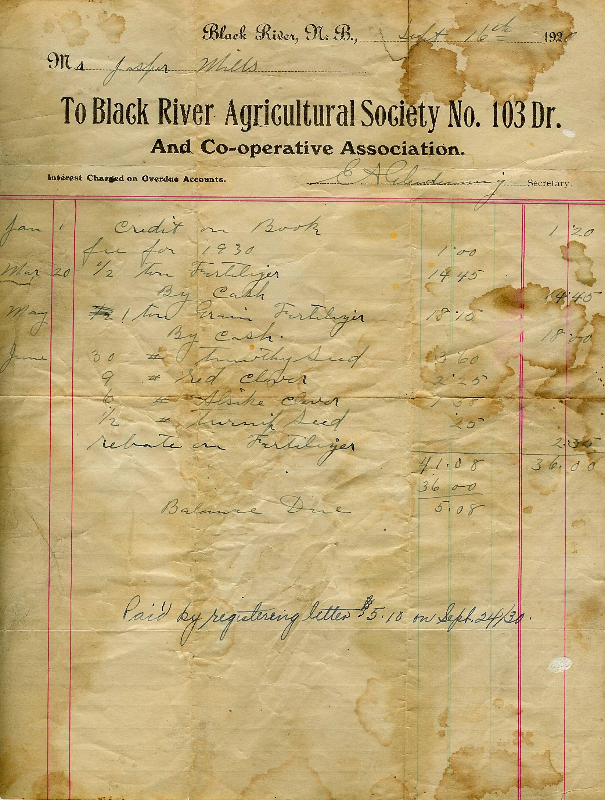
PLATE 14: No. Black River
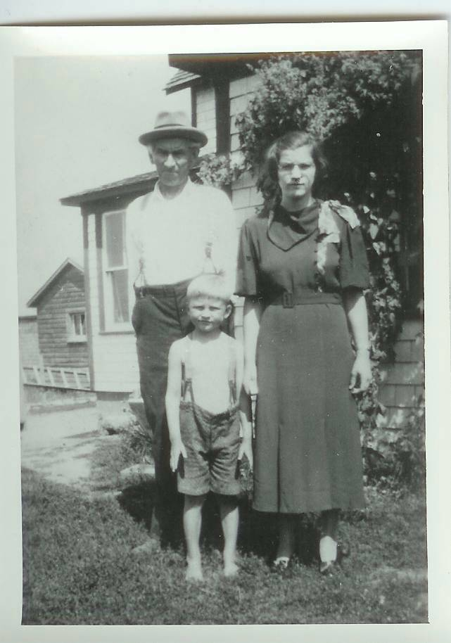
Dad, Lillian and Don
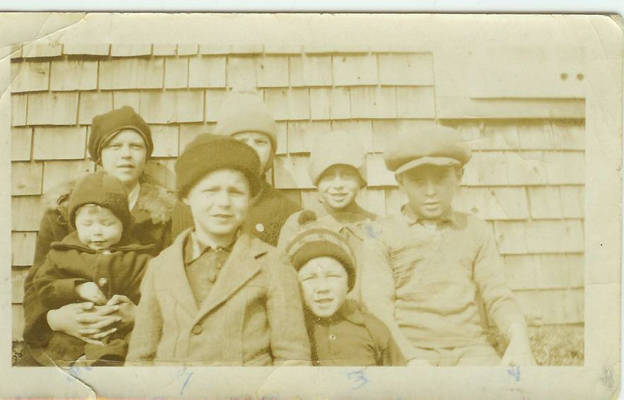

Norm, Don and Ken
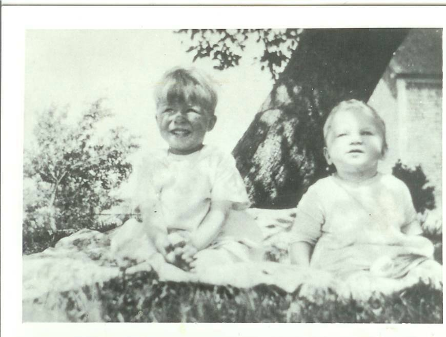
George Watling and Don

Aunt janet, Mum. Bioney, ? Aunt Al. ? Marion MacLean
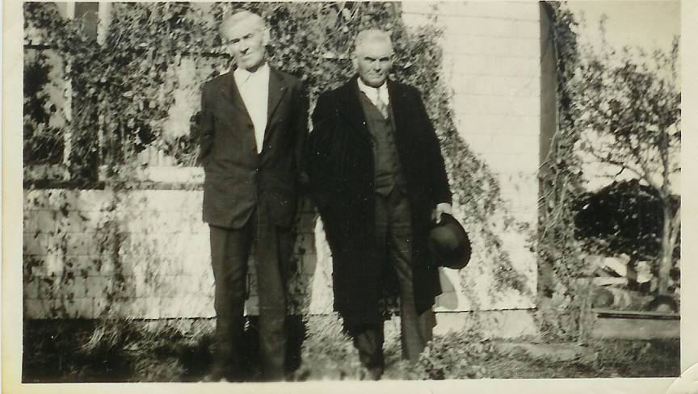
Elmer and Frank Glendenning
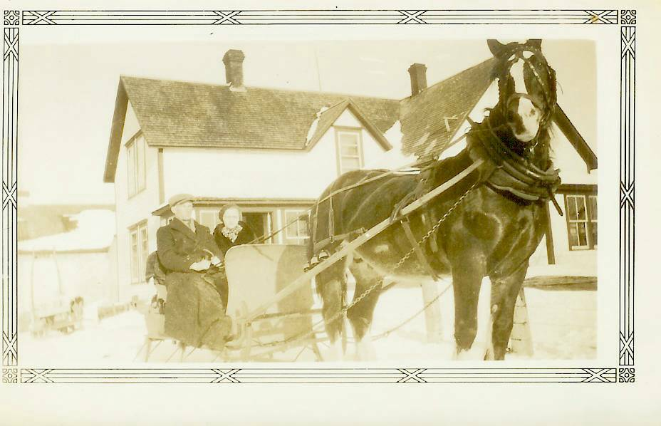
Walter and Venetia with Prince at Little Branch in 1935
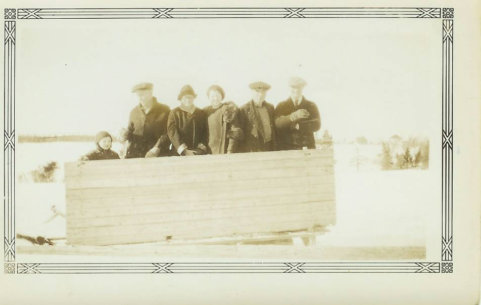
Don, Alex Newton, Mum
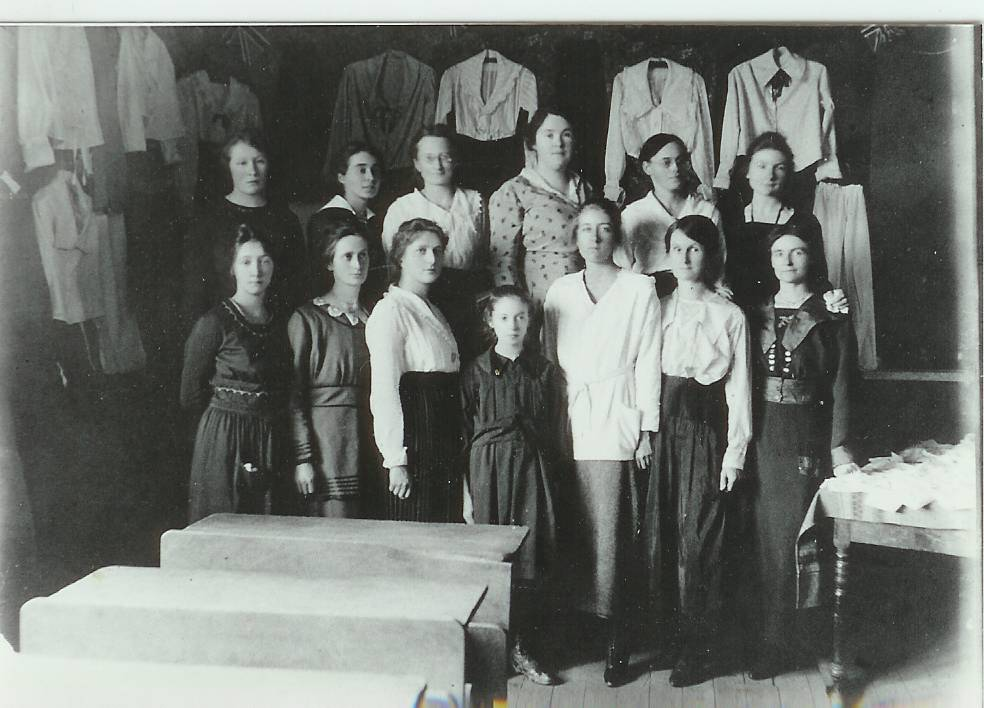
Little Branch sewing class:
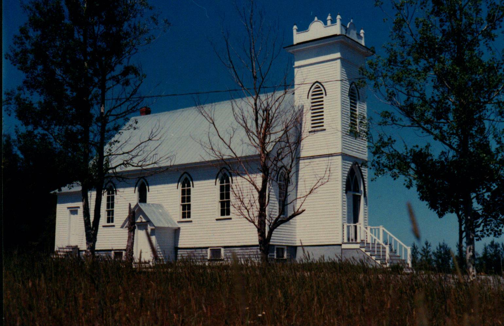
St. Paul’s Presbyterian Church
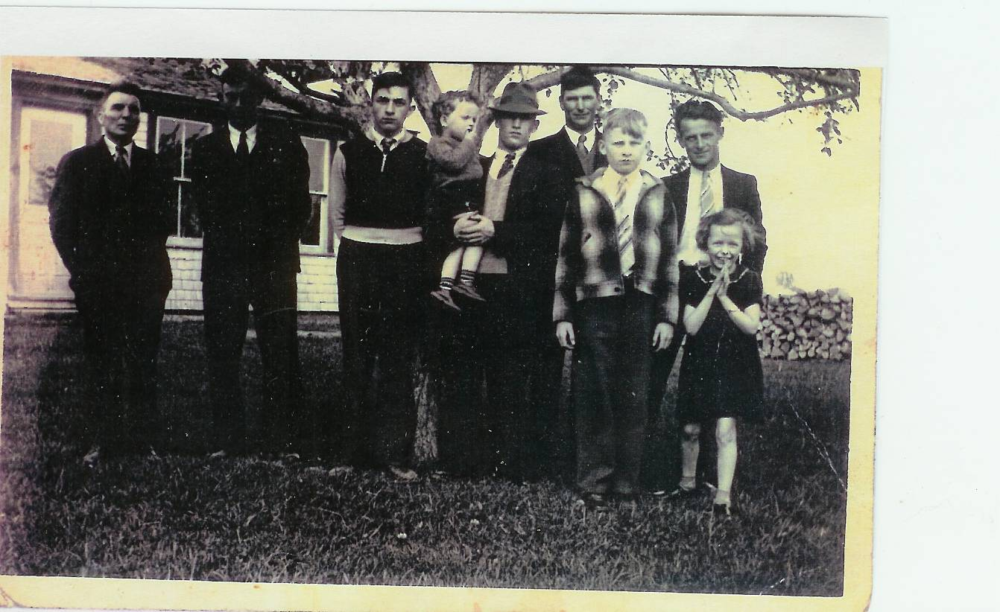
John R. Godfrey, John Glendenning, Ken Glendenning, Earl Taylor holding Gerald, Cameron Russell, Don Glendenning, Sterling Williston, Joan Williston
\